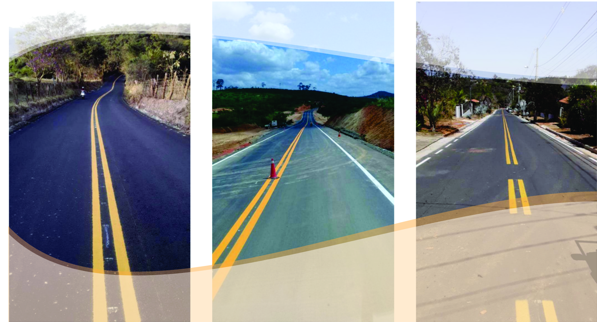
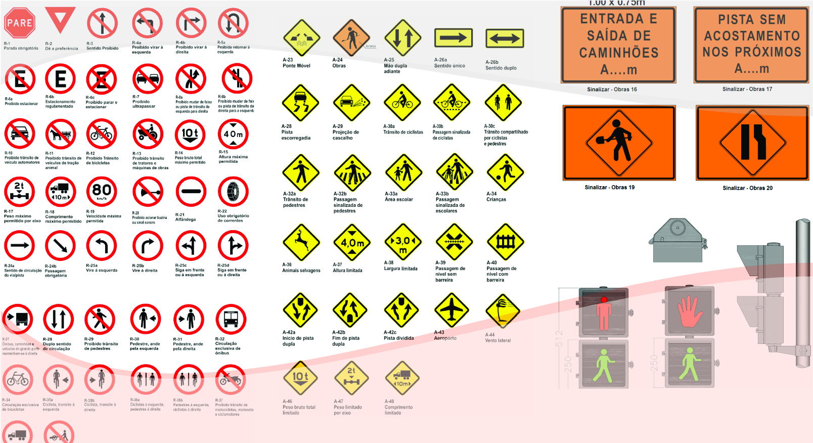
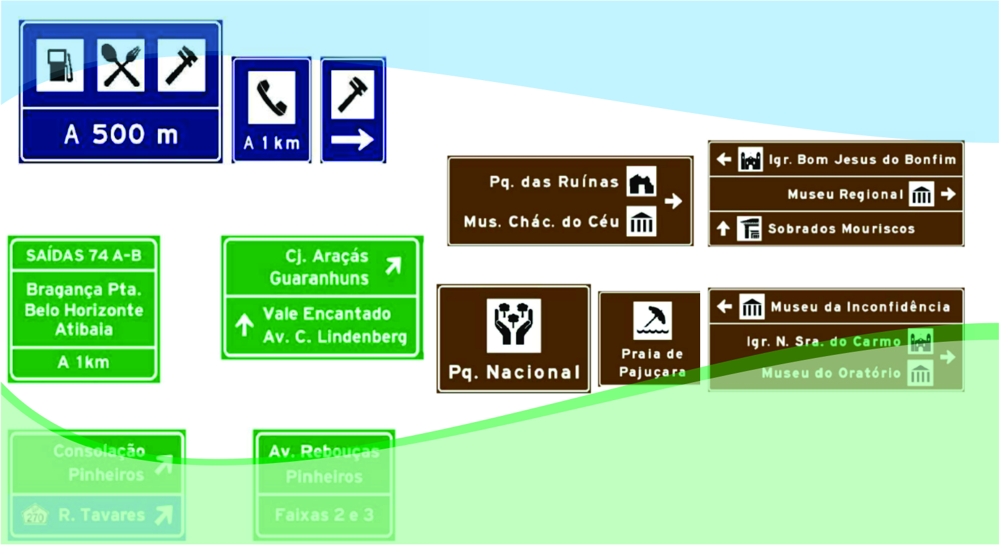
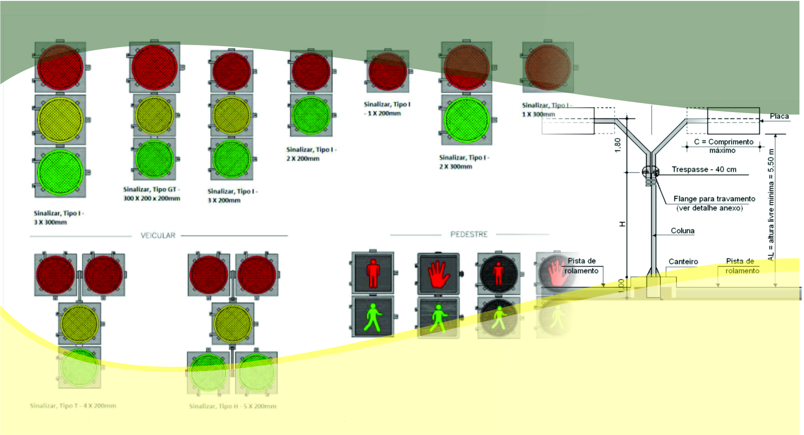

Sinalização Horizontal
“Um subsistema da sinalização viária que se utiliza de linhas,
marcações, símbolos e legendas, pintados ou apostos sobre o
pavimento das vias.”(CTB)
Demarcação Viária: Pintura de Faixas,símbolos,setas e dizeres,com
tinta acrílica diluída em solvente, emulsionada em água, metacrílica
ou termoplástica spray e extrudada. Conforme recomendação
técnica, definidas no CTB e no Volume IV do Manual Brasileiro de
Sinalização de Trânsito,do Conselho Nacional de Trânsito – Contran.

Sinalização Vertical
“É um subsistema da sinalização viária cujo meio de comunicação
está na posição vertical, normalmente em placa, fixado ao lado ou
suspenso sobre a pista, transmitindo mensagens de caráter
permanente e,eventualmente, variáveis,através de legendas e/ou
símbolos pré-reconhecidos e legalmente instituídos.” (CTB)

Sinalização de Indicações e Turisticas
“Indicam aos usuários da via os locais onde os mesmos podem dispor
dos atrativos turísticos existentes,orientando sobre sua direção ou
identificando estes pontos de interesse e pontos turisticos.”

Sinalização Semafórica
“A sinalização semafórica é um subsistema da sinalização viária que
se compõe de indicações luminosas acionadas alternada ou
intermitentemente por meio de sistema eletromecânico ou
eletrônico.Tem a finalidade de transmitir diferentes mensagens aos
usuários da via pública, regulamentando o direito de passagem ou
advertindo sobre situações especiais nas vias.”